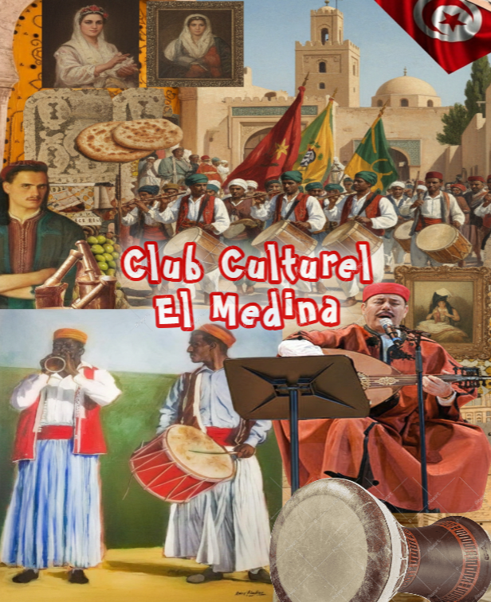

À propos du club
Le Club Culturel El Medina se donne pour mission de préserver, valoriser et faire vivre le patrimoine matériel et immatériel de la Médina de Tunis. Entre tradition et modernité, nous organisons des conférences, des visites guidées et des festivals pour sensibiliser le public à la richesse de notre histoire. Rejoindre notre club, c'est participer activement à la sauvegarde de notre identité culturelle tout en s'ouvrant sur le monde.
